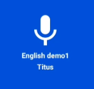
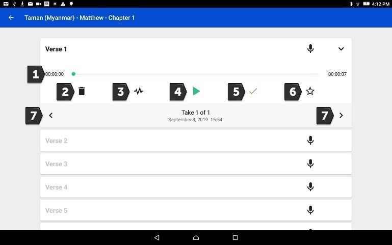
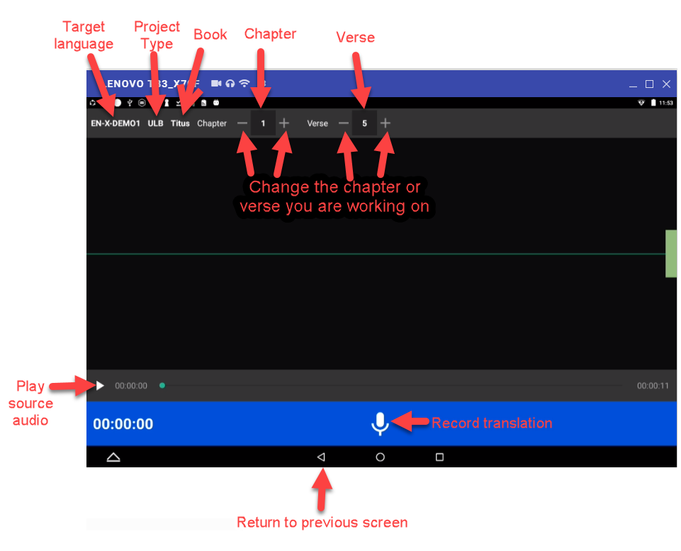

Main Screens of BTT Recorder¶
There are four main screens in BTT Recorder:
These four screens are described below.
Home page¶
The first time you open BTT Recorder, after you create a user the Home page is shown. The right side of the page is blue with a Microphone icon, and the left side of the page is green with a List icon.
Right side (blue with Microphone icon):¶
If no project is shown¶
Tap anywhere in this area to start a new project (see Create a New Project).
If project is listed¶
Tap anywhere in this area to navigate to the Recording Screen for that project.
Left side (green with List icon)¶
Tap anywhere in this area to navigate to Project Management page.
Project Management pages¶
The Project Management page that first opens from the Home page displays a list of existing projects, if any. It also contains a 3-dot icon that enables you to access an Options menu.
Project list¶
If you have existing projects, this page displays a list of them. You can also tap anywhere on a project bar to invoke the chapter list for that chapter (see Chapter list), or you can tap the Plus icon to start creating a new project (see Create a New Project).
The Project list view is the only screen where you have access to the Options menu ( see Using the Options menu).
Each project in the list contains 3 columns that describe the project and 2 icons that you can tap.
Descriptive columns:¶
Target language
Project type
Completion status
Information icon¶
Tap the Information icon (gray circle with a white ‘i’ inside) for a project to open a popup window with details about the project. The Book and Target Language are in the title of the Information popup. The window displays the following details:
Project - The name of the book.
Target Language - The common name followed by the language code in parenthesis.
Translation Type - The choice made for the project. (Regular, UDB, or ULB)
Unit - Either Chunk or Verse.
Source Audio Language - If source audio is chosen its language is displayed here. You can tap the pencil to change the Source Audio language.
*Source Audio Location - If source audio is chosen its location is displayed here. You can tap the pencil to change the Source Audio location.
*
* This opens the screen for selecting the source audio (see Select the Source Audio).
Tapping the Trashcan icon at the lower-left deletes your project. The other icons along the bottom right are for sharing your project (see Sharing Your Recordings).
Tap anywhere outside of the Information popup to close it.
Microphone icon¶
Tap the Microphone icon to start recording the project. It opens the Recording screen to the first verse or chunk of the project.
Chapter list¶
On the Project list, tap anywhere on the project bar to invoke the Chapter list.
On the Chapter list, you can:
Tap the left arrow at the top left of the window to return to the Project list.
Tap in the chapter bar to invoke the verse or chunk list.
The Chapter list contains 2 columns that describe the chapter and 2 icons.
Descriptive columns:¶
Chapter number
Completion status
Compile icon¶
Tap this icon to compile the individual verse recordings into a single recording for the chapter. See Creating a Chapter Recording.
Microphone icon¶
Tap to invoke the Recording screen for this chapter.
Verse/chunk list¶
On the Chapter list, tap in the chapter bar to invoke the Verse or Chunk list for that chapter.
On the Verse/Chunk list, you can tap the left arrow at the top left of the window to return to the Chapter list.
Each verse or chunk is recorded separately, and you can record multiple takes of each verse or chunk. You can rate the takes to determine which one is used when you compile a chapter recording.
The Verse/Chunk list contains 2 columns that describe the verse or chunk and 2 icons.
Descriptive columns¶
Verse number (or numbers if in chunk mode)
Number of takes (if more than one)
Microphone icon¶
Tap the Microphone icon to record a new take of the verse or chunk. See Recording screen.
Right arrow¶
Tap the right arrow to display the Take bar for the verse or chunk
Take bar¶
A take is one recording of a verse or chunk. Each verse/chunk may have multiple takes. There is not a separate page to show the takes. Instead, they are displayed in a bar under the verse or chunk, and you can navigate between them by using the left and right arrows.
The components of the Take bar are:
The timeline of the length of the audio take. The line expands left to right as the audio take plays. The time at the right shows the length of the recording; the time at the left increments as the recording plays.
Garbage can icon - Delete a selected take. The numbering of the takes changes to reflect the lower number of takes available.
Waveform icon - Invoke the Edit screen to edit the take (see Edit screen).
Play icon - Play the recording. Tap the Pause icon (replaces the Play icon) to stop playing the recording.
Checkmark – Tap to turn green, or if green, tap to turn black. The green color means that the take is approved to use when compiling a chapter recording. When the take is rated 3 stars, this checkmark is green, or you can just tap it to turn it green. Only one take per verse or chunk can be marked with a green checkmark.
Star icon - Rate the recording. Only one take per verse or chunk can be rated three stars, indicating the take that is approved to use when compiling a chapter recording.
Left or right arrow - Navigate among takes for a verse. Notice that the take number changes.
Recording screen¶
The recording screen enables you to record a take of a single verse or chunk.
Opening the Recording Screen¶
There are multiple ways to reach the recording screen:
If you are still in the Source Audio screen after creating a new project, tap CONTINUE in the lower right of the window.
If you are on the Home screen and the name of the project on which you want to work is displayed, tap in the blue recording area. If a different project is shown, or no project is shown, you need to record from the Project Management screen as explained below.
If you are on the Project Management screen, tap the Microphone icon in any of the list views (project, chapter, or verse/chunk).
The Recording screen is initially set to a certain verse/chunk, depending on how you opened the Recording Screen:
If you opened the Recording screen from the Home screen or from the Project list of the Project Management screen, the Recording screen initially shows Chapter 1 and verse/chunk 1 of the project.
If you opened it from the Chapter list of the Project Management screen, the Recording screen is initially set to verse/chunk 1 of the chapter whose microphone you clicked.
If you opened it from the Verse/chunk list of the Project Management screen, the recording screen shows that verse or chunk. Note: This is the preferred method, because the Verse/chunk list shows you whether that item has been recorded already, so that you don’t unintentionally duplicate your work. It is also an easy way to navigate to the specific item that you want to record.
Components of the Recording Screen¶
The Recording screen contains the following elements:
Top bar: Displays project information, chapter number, and verse/chunk number, with + and = icons to change the chapter and/or chunk/verse numbers.
Play icon to play the source audio, if you are using source audio (changes to Pause icon to stop/pause listening). You can listen to the source audio as needed to consume the ideas. You may need to replay the source audio more than once before you are ready to record the translation.
If you do not see the Play icon, you do not have source audio or have not defined it correctly (for example, you may not have created your project with the same verse or chunk mode as the source audio.)
Microphone icon to begin recording translation (changes to Pause icon to stop/pause recording)
The Recording Process¶
If there is source audio, it appears in a gray bar just above the blue bar at the bottom of the screen. You can listen to the source audio as needed to consume the ideas. You may need to replay the source audio more than once before you are ready to record the translation. Be sure to record only one chunk or verse at a time.
To play the source audio, perform the following steps:
Tap the Play icon to listen to the source audio.
Tap the Pause icon to pause the source audio.
Tap and hold the green dot and drag it to move to a different position in the source audio.
To record the oral translation, perform the following steps (be sure to record only one verse or chunk at a time):
When you are ready to record, tap the Microphone icon.
Record the verse or chunk. As you begin to speak you will see lines appear on the screen, which is the result of the sound of your voice. These lines are known as waves, and the entire line is called a waveform.
To pause or stop recording, tap the Pause icon.
If you want to record more, tap the Microphone icon to resume.
When you are finished, tap the Checkmark icon, or if you don’t want to save that recording, tap the device’s Back button to return to the screen where you opened the Recording screen.
If you tapped the Checkmark icon, the program advances to the Edit screen, where you can edit the recording or tap the Save icon to save it.
If you tapped the back button, tap the Trashcan icon to delete the recording or the Arrow icon to continue in the Recording screen.
Edit screen¶
A take is a recording of a verse or chunk; a verse/chunk can have multiple takes. Immediately after recording a take, the program automatically advances to the Edit screen. You can also navigate to the Edit screen for a completed take by tapping the Waveform icon on the Take bar of the Verse or Chunk list.
The edit screen enables you to edit the take of a verse or chunk in the following ways:
The Edit screen contains several icons to perform this functionality, as shown below:

Comparing your recording to the source audio¶
If you have source audio, you can compare the target language recording to the source audio to see what, if anything, needs to be changed in your translation. Perform the following steps:
Tap the Ear icon to switch to Source Audio.
Tap the Play icon on the gray bar.
To pause the recording tap the Pause icon on the gray bar (the Pause icon replaces the Play icon when the audio is playing.)
To rewind (go towards the beginning of the recording) or fast forward (go towards the end of the recording) tap and hold the green dot and slide your finger to the left for rewind or to the right to fast forward.
To return to your recording, tap the Waveform icon.
Then, listen to the recording:
a.To playback your recording, tap the white Play icon on the blue bar.
b.To pause the playback of the recording, tap the Pause icon on the blue bar. (The Pause icon replaces the Play icon.)
c.To rewind to the beginning of the recording or go to the end of the recording tap the Rewind or Forward icon.
Tap between the source audio (Ear icon) and target language (Waveform icon) playback to compare the entire recording.
Cutting¶
The action of removing a section of a recording is known as a “cut”.
To make the cut you first mark the section to be deleted. There are 2 ways to mark a section.
The first way is to use the upper waveform window:
a.Position the audio at the thin blue line for the beginning of the recording to be removed. NOTE: The blue line does not move. You need to do the tap-and-hold action to move the recording to the blue line.b.Tap the Flag icon to set the beginning point of the cut. This inserts a marker where the cut will start.c.Drag the recording by holding your finger on the screen and sliding to the left until the end of the part to be removed is at the blue line.d.Tap the upside-down Flag icon. This marks the end of the section for deletion.The second way to mark a section for deletion is by using the entire waveform that is displayed in the lower section of the window.
a.Tap and hold where you want the deletion to begin and drag to the end of the deletion.b.As you do so, the marked area is shown in both the upper and lower waveform areas and the flags are inserted automatically.
OPTIONAL: Tap the Play icon to listen to the section that will be removed.
Do you want to change the amount of recording that is selected? Tap-hold-drag on the upside-down flag to increase or decrease the amount of the selected recording.
Need to start again? Tap the Crossed-off Flags icon to remove the flags and start at step 1.
Tap the Scissors icon to cut the section you have marked for deletion.
OPTIONAL: Tap Play to listen to the take to ensure it is correct. If you made a mistake, tap the Undo icon to restore the deleted section.
Tap the Save icon to save the edit. BTT Recorder saves the edited take and returns to Project Management.
Inserting¶
Sometimes you may want to insert a missing part into the translation. For example, to re-record a section of the take, you can first cut it and then insert the replacement for the section.
To insert a section into the recording, perform the following steps:
Position the audio at the thin blue line for where the new audio will be added in (use the tap-hold-drag action, or tap in the lower waveform, or listen to the recording and tap Pause when you are at the correct place.)
Tap the Add a Recording icon in the top gray bar. This opens a new recording session for the part to be inserted. NOTE: The bar at the bottom of this window is green.
Tap the Microphone icon to start recording.
When finished, tap the Pause icon.
To insert the new recording, tap the Checkmark icon.
A pop up appears stating it is inserting recording … please wait.
The original target language recording opens with the inserted recording added.
To save the file tap the Save icon. A ‘Saving’ pop-up appears.
Once the program is done saving, the Project Management verse/chunk list screen opens with a new take added at the bottom of the take list. For example, if there were 3 takes before recording the new section, the added take is Take 4.
Placing verse markers¶
Verse markers are available only when recordings are done in chunk mode. To insert the verse markers, perform the following steps:
Open the recording in the Edit screen.
Tap on the bookmark icon. The Verse Marker window opens.
Notice the yellow playback bar on the bottom of the window.
The top gray bar has the number of markers left to put into place.
A verse marker is at the beginning of the recording.
Locate the end of the verse:
Tap the Play icon to play back the recording.
Tap the Pause icon to stop the playback when it is at a verse ending.
- Other ways of finding the correct spot in the recording:
Use the tap-hold-drag action to move the playback forward or backward until the verse division is on the blue line.
- OR
Tap in the bottom waveform.
To add the verse marker, tap the white flag on the yellow bar at the bottom right of the screen.
If there is another verse to mark: Continue to listen to the playback for the next ending of a verse.
If you need to move a verse marker, you can use the tap-hold-drag action to move a verse marker flag forward or backward on the waveform.
When there are no more verse markers to place – tap the X icon at the top left of the window, just to the left of where it tells you the number of markers left to be placed.
The Edit screen opens and shows the verse markers. Tap the Save icon at the bottom right of the screen to save and return to Project Management.
HINT: You might want to rate this recording before saving.
Rating¶
To indicate the quality of the recording, you can add a star rating to it. The star ratings are used by the program to determine which take of a verse or chunk to use when compiling an entire chapter recording (see Creating a Chapter Recording).
Tap the Star icon (either on the verse/chunk bar or in the top gray bar of the edit window). The ‘Rate this take’ window opens.
Decide on a rating:
Tap the left star if the recording is not the best – the star turns red.
Tap the middle star if the recording is fine but could be better – the stars turn yellow.
Tap the right star for an excellent recording – the starts turn green. Only one take per verse/chunk can be rated 3 stars, because this indicates the accepted take.
Tap OK to save.